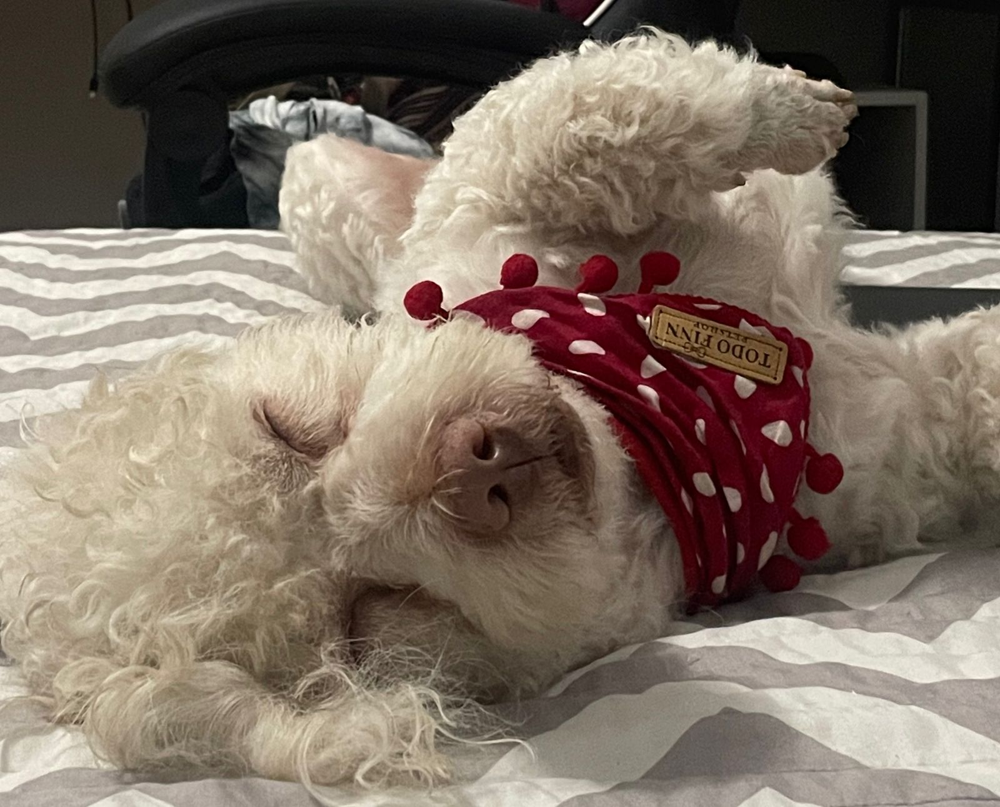
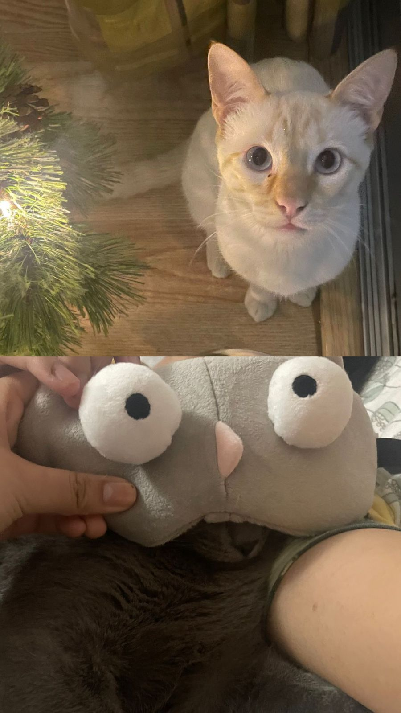

SOY DAYANA CORINA PUEDEN DECIRME DAYANA O CORINA,AMOS MIS NOMBRES
BUENO AQUI PODRAS CONOCER MÁS SOBRE MI,EMPECEMOS......
¿POR DONDE EMPEZAMOS?
Estudio la carrera de Arquitectura de interiores en Toulouse Lautrec......
NOOOO..mejor así
había una vez una joven apasionada llamada Dayana, una talentosa estudiante de 26 años que se sumergía en el emocionante mundo de la arquitectura de interiores. Su amor por el diseño y la creatividad la llevaba a pasar horas inmersa en proyectos, ya sea dibujando en su mesa de trabajo o explorando tiendas en busca de los acabados perfectos.
Las paredes de su habitación estaban adornadas con bocetos y collages inspirados en sus exploraciones en Pinterest, donde encontraba la chispa de nuevas ideas para sus proyectos. La música techno resonaba en el fondo mientras diseñaba, creando un ambiente que alimentaba su creatividad.
Pero Dayana no solo encontraba pasión en su carrera y en sus actividades físicas. También compartía su corazón con un adorable perrito llamado Copito. Este pequeño compañero de cuatro patas siempre estaba a su lado, ya fuera mientras diseñaba en casa o acompañándola en sus aventuras al aire libre.
Su rutina incluía sesiones de entrenamiento intenso, sesiones de yoga relajante y momentos de natación que le permitían liberar el estrés acumulado. Copito también participaba en estas actividades, demostrando ser más que un simple mascota: era su fiel amigo y confidente.
Entre sus sueños, destacaba el deseo ferviente de explorar el mundo. Denver, España y Alemania eran destinos que ocupaban un lugar especial en su corazón. Soñaba con perderse entre la arquitectura única de cada ciudad, absorber nuevas perspectivas y aplicarlas a sus futuros diseños, con Copito siempre a su lado.
Un día, mientras diseñaba un proyecto que la tenía emocionada, recibió una oportunidad única para presentar su trabajo en una conferencia internacional en España. Esta sería su oportunidad de mezclar su pasión por el diseño con su deseo de explorar nuevos lugares, y, por supuesto, Copito la acompañaría en esta emocionante aventura.
El viaje la llevó a rincones fascinantes de España, donde la arquitectura histórica se mezclaba armoniosamente con las tendencias modernas. Mientras exploraba, encontró inspiración en cada rincón, desde las calles adoquinadas hasta los cafés con encanto. Después de la conferencia, decidió extender su aventura, visitando Alemania y finalmente cumpliendo su sueño de explorar Denver, siempre con la leal compañía de Copito.
Cada lugar la cautivó de manera única, dejando una huella indeleble en su corazón y, al regresar a casa, transformó esas experiencias en diseños vibrantes y llenos de vida. Dayana no solo se convirtió en una arquitecta de interiores talentosa, sino también en una narradora de historias a través de sus creaciones, fusionando su pasión por el diseño, la música, el deporte, los viajes y su profundo amor por Copito en un relato visual que inspiraba a todos los que cruzaban su camino. Y así, la historia de Dayana seguía evolucionando, una obra maestra en constante creación.
MIS FAVORITOS
MI TEAM DE TODOS LOS DÍAS

COPITO
!HOLA SOY COPITO¡
Soy el engreído de Dayana,tengo 13 años y vivo con mi hermosa familia desde cachorro me resctaron del centro de Lima.Siempre paso fiestas con mi familia,me engrien muhco y me dan mucho amor.Salgo a pasear aproximadamente de 3 a 4 veces proque amo ir al parque puedo quedarme horas de horas ahí,tengo muchos amigos y soy feliz ahí.

STUART y SAFIRO
¡HOLA SOY STUART Y YO ZAFIRO!
SOY STUART EL CASI NUEVO INTEGRANTE DE LA FAMILIA,TENGO 6 MESES Y TAMBIPEN FUI RESCATADO SOY EL FAVORITO DE LAS HERMANAS SOY DEMASIADO JUGUETON Y DESTROZO TODAS LAS PAREDES DE ÑA CASA TIENE UNA TEXTURA DIVERTIDA,YO SOY ZAFIRO,TENGO 3 AÑOS DE EDAD Y EN CASA ME DICEN MERLINA CREO QUE ES PORQUE NO ME CAE NADIE,SOY LA FAVORITA DE DANIELA,ELLA SIEMPRE ME DA MUCHO AMOR Y SUELO DORMIR SIEMPRE CON ELLA.